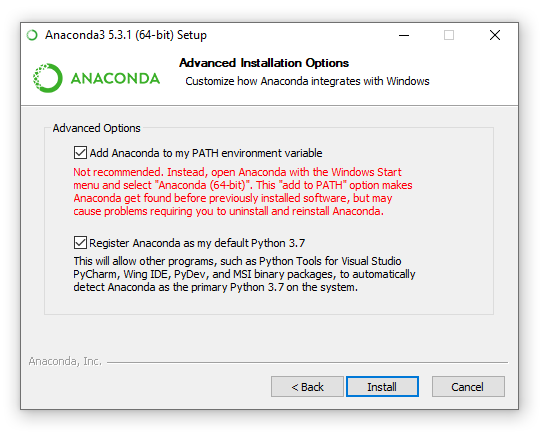
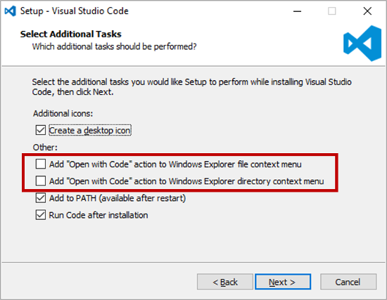

Recommended Setup for Contribution¶
Assumptions¶
These instructions assume that you are using a Windows machine and that you have administrator rights on your machine. Although this document is tailored to Windows users, PyMedPhys itself works on Windows, macOS and Linux.
Your mission¶
Your mission, should you choose to accept it, is to complete all the tasks within this document. While doing so, please take notes of the pain points. Write down what feedback you have. By the end, instead of you emailing that feedback to me, we’d like you to use your new set up to edit this file and submit a merge request!
Python & Anaconda¶
Anaconda is a free, open source, optimized Python (and R) distrubution. It includes:
- conda, a powerful package and environment management system.
- Python
- Over 100 automatically installed scientific packages (numpy, scipy, etc.) that have been tested to work well together, along with their dependencies.
Download the latest Anaconda Python 3 version from here
When installing Anaconda make sure to install it for your user only, and tick the option “add to path”.
You might notice that Microsoft VS Code is available to be installed via the Anaconda installation. However, we recommend installing VS Code from its official install location as outlined below in Text Editor. The Anaconda installer does not provide the opportunity to tick the “Open with Code” boxes detailed below.
Once you have installed Anaconda, add the conda-forge channel to your machine using the following command in a new command prompt:
conda config --add channels conda-forge
Text Editor¶
Visual Studio Code is an excellent, free, open-source code editor. It comes with many great features for both Python and Git. You can download the official release here.
When installing VS Code, make sure to tick the “Open with Code” boxes:
You will need to install a few extensions in VS Code to complete your set up. This is very easy to do via the Extensions Marketplace once VS Code is installed. With VS Code running, access the marketplace by clicking this symbol on the left toolbar:
Search for the “Anaconda Extension Pack” and install it. Reload VS Code when installation has finished and you’re ready to go with Python in VS Code!
We also recommend the “GitLens” extension to further enhance your VS Code experience! It comes with a number of useful tools for using Git within VS Code itself.
A Command Prompt¶
Cmder is a good command prompt that fills the massive gap on Windows machines. One would think that syntax highlighting, copy/paste, and window resizing would be commonplace in terminals everywhere - but apparently not! Nevertheless, cmder to the rescue. Install the mini version of cmder from here.
Once you’ve downloaded cmder, follow the steps given here to obtain the ability to open a terminal in any directory by right clicking in the file browser.
Chocolatey¶
Chocolatey is a package manager for Windows. It makes installing software development tools quite a breeze. Follow these instructions to install Chocolatey.
Git, Git LFS, and Yarn¶
Use Chocolatey within an administrator command prompt to install Git, Git LFS, and yarn like so:
choco install git git-lfs yarn
GitHub Account¶
Make a GitHub account here. Once you have an account, you will need commit rights to this repository in order to make contributions. Create an issue on GitHub within the PyMedPhys repository here and include “request for commit rights” or similar in your issue’s content, along with “@SimonBiggs” and “@Centrus007” to ensure it is seen!
Whenever you wish to discuss anything about PyMedPhys, please create an issue on GitHub. It can be to ask for help, suggest a change, provide feedback, or anything else regarding PyMedPhys. Write “@” followed by someone’s username if you would like to talk to someone specifically.
The real power of GitHub comes from Git itself. A great piece of Git documentation can be found here. Use this documentation to begin to get a feel for what Git is.
Some useful resources¶
At this point you might find some of the following resources useful:
The “Don’t be afraid to commit” resource will be invaluable for these next few steps.
Authenticate your computer to be able to access your GitHub account¶
Before setting your SSH keys, I recommend permanently setting your HOME variable. This can clear up some potentially confusing issues. Do this by running the following where yourusername is your Windows domain user name.
setx HOME "C:\Users\yourusername"
Follow these instructions to create and add an SSH key to your GitHub account. Since you already have ssh built into cmder, you can skip the first steps of the tutorial.
If all has gone well you should be able to run the following without being prompted for a password.
git clone git@github.com:pymedphys/pymedphys.git
cd pymedphys
This will download all of PyMedPhys to your local machine.
Set up nbstripout¶
nbstripout is used to make it so that you do not post Jupyter Notebook outputs online. Depending on how you use notebooks these outputs may contain private and/or sensitive information.
Warning
In the event that you uninstall Python, it is possible that nbstripout ends up disabled. Stay prudent, and be extra cautious when working with sensitive information stored within a notebook in a Git repository.
To install nbstripout run the following within the pymedphys directory:
conda install nbstripout
nbstripout --install
nbstripout --status
Make sure that the output of nbstipout –status starts with:
`bash
nbstripout is installed in repository
`
Install the development version of PyMedPhys¶
Begin by installing the dependencies of the online version of PyMedPhys with conda. With cmder open in the pymedphys directory, run:
conda install pymedphys --only-deps
pip install -e .
Update this document¶
Note
If you’ve made it this far, well done!
Now that you’ve got this far, you have a copy of the code on your machine.
First thing’s first: make a branch. If you don’t know what that is, head on back over to Don’t be afraid to commit and scrub up on your terminology.
To make a branch, open cmder in the pymedphys directory and run the following:
git checkout -b your-name-edit-contributing-document
Once you’ve run that you are now free to make some changes.
Right click on the top level pymedphys directory, and press “Open with Code”. This document that you’re reading is located at docs/developer/contributing.rst. Use VS Code to navigate to that file and begin making your changes.
Once your changes are complete, reopen your cmder and run:
git add -A
git commit -m "my first commit"
git push --set-upstream origin your-name-edit-contributing-document
Now, you have successfully sent your branch online.
Now you need to open a merge request. Open one here, select the source branch to be pymedphys/your-name-edit-contributing-document and set the target branch to be pymedphys/master.
At that point, we’ll get notified and we can begin discussing the changes you’ve made.
Thank you! Welcome to the team!